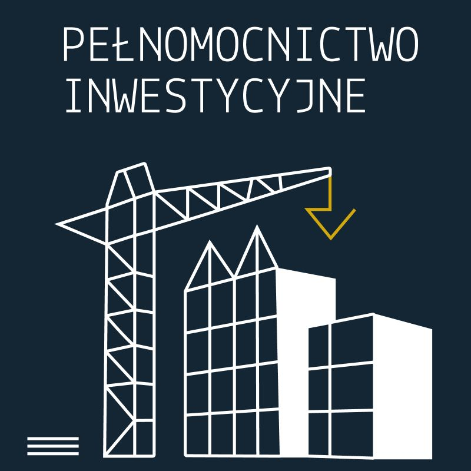

POMAGAMY
WYKONAĆ TWÓJ PLAN
Weryfikacja nieruchomości
przed zakupem
Inwestycje
-
Wyszukiwanie oraz szykowanie nieruchomości pod inwestycje w tym
budowy, zmiany sposobu użytkowania, badanie działek pod kątem
możliwości realizcji,
-
Uzyskiwanie dokumentacji niezbędnych do sprzedaży nieruchomości
(wymaganych przez notariusza), zwiększanie wartości działki przy
wycenie.
KONTAKT:
608584422
biuro@pi.pl
facebook
-
Analiza miejscowych planów zagospodarowania przestrzennego oraz
studium uwarunkowania przestrzennego (uzyskiwanie wypisów i wyrysów
z MPZP, zaświadczeń planistycznych, pisanie wniosków i uwag do
projektów planów)
-
Pośrednictwo w uzyskiwaniu warunków zabudowy, wypełnianie wniosków,
sporządzanie koncepcji zagospodarowania terenu, analizowanie funcji
terenu pod kontem możliwości realizacji inwestycji,
-
Weryfikacje nieruchomości pod względem zalewania terenu, ochorny
konserwatorskiej, ochorny środowiskowej oraz przyrodniczej, obsługi
komunikacyjnej,
-
Konsultacje w sprawie możliwości lokalizacji budynków pod względem
warunków technicznych,
-
Pomoc w uzyskiwaniu materiałów geodezyjnych w tym map do celów
projektowych, wypisów i wyrysów z ewidencji gruntów, map
zasadniczych,